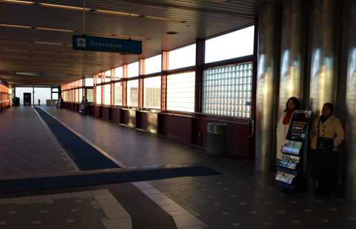

Iskedyul ng Pampublikong Witnessing Bay Point


“Ang munti ay magiging isang libo, at ang maliit ay magiging makapangyarihang bansa. Ako mismo, si Jehova, ang magpapabilis nito sa sarili nitong panahon.” (Isa. 60:22)
DMinamahal na mga Kaibigan,
"Ang maliit na isa ay ang kanyang sarili na maging isang libo , at ang maliit na isa isang makapangyarihang bansa . Kong sarili ko, ni Jehovah , ay dapat pabilisin ang mga ito sa sarili nitong panahon . " ( Isa. 60:22 )
Salamat sa mga pagsisikap ng sa iyo mahal na kaibigan, ang mga salitang ito ng ni Jehovah ay nagpapatunay tunay na patungkol sa mga pampublikong witnessing programa sa Pittsburg / Bay Point BART station. Tunay naming pinahahalagahan ang lahat ng pagsusumikap na iyong ilagay sa upang makatulong na gumawa ng isang tagumpay na ito sa programa.
Ngayon na ang program ay puspusan na nais naming ibigay ang sumusunod na mga tagubilin patungkol sa mga pampublikong witnessing sa BART . Ang ilan sa mga maaaring maging paalala habang ang iba ay maaaring maging bagong tagubilin batay sa pinakabagong arrangement ginawa gamit ang mga iskedyul at BART .
Iskedyul - Mangyaring maglaan tandaan na ang itaas ay isang " mabuhay " online na kalendaryo lumikha kami kaya lahat ng tao ay magkakaroon ng access sa pinakabagong iskedyul. Anumang pagbabago na ginawa sa pamamagitan ng ang kapatid na lalaki overseeing ang iskedyul ay agad na masasalamin sa mga online na iskedyul pati na rin . Kung para sa anumang kadahilanan hindi mo magagawang tuparin ang iyong pagtatalaga , mangyaring mag-email baypointlocusts@gmail.com kaya maaari naming gawin ang mga kinakailangang pagbabago at pahintulutan ang iba na lumahok sa panahon ng iyong kawalan .
Mga Lokasyon - May 2 lamang ang mga lokasyon na BART ay nagbibigay-daan sa amin upang maging sa para sa pampublikong witnessing . Ang mga sumusunod na aprubadong mga lokasyon ay hindi itinalaga sa anumang partikular na pagtitipun-tipon ng mga tao at maaaring gamitin ng sinuman na nakatalaga sa iskedyul. ( Mangyaring tingnan ang mga larawan sa itaas)
• Sa harap ng elevator .
• Sa cove nang kalahating down na corridor sa East side. (Ito ay sa parehong panig na rin sa ibang lokasyon cart)
Sa ilalim ng walang pangyayari ang pinapayagan namin na hindi sa anumang mga lokasyon maliban sa mga ipinahiwatig. Ito ay lalong totoo ng lugar na malapit sa cash machine .
Pakikilahok - mga itinalaga sa iskedyul Tanging dapat lumahok sa mga pampublikong witnessing . Mangyaring maging hindi nagkukulang sa oras kapag darating sa at umaalis mula sa iyong itinalaga shift . Sa gayon paggawa makakakita maiwasan namin ang pagguhit ng hindi nararapat na atensiyon sa ating sarili habang binabago nagbabago . Ito ay makakatulong din sa amin upang maiwasan ang mga nagpapang-abot at inconveniencing ang nagbabago ng iba pang mga kapatid na lalaki at babae sa programa.
Weather - Sa pinipigilan amin ang masungit kaganapan ng panahon mula sa pagiging sa isa sa mga aprubadong mga lokasyon , maaari mong piliing tumayo sa anumang isa sa iba pang mga lokasyon naaprubahan maaapektuhan ng mga taya ng panahon . Kung mayroong iba pang mga congregations na nakatalaga sa parehong panahon , isa lamang cart ay pinapahintulutan upang maging sa harap ng elevators . Ang nakatalaga kaibigan ay kailangang mag-ehersisyo ang reasonableness & kapakumbabaan at magkaroon ng unawaan bilang sa kung sino ang mananatili at kung sino ang pumunta . Bilang paalala , sa ilalim ng anumang pagkakataon ang pinapayagan namin na hindi sa anumang iba pang mga lokasyon maliban sa mga ipinahiwatig.
May gaano kahalaga ang bawat at ang bawat isa ay maaaring gawin upang mag-ambag sa ang tagumpay ng programang ito. Kung mayroon kang anumang mga katanungan o alalahanin, mangyaring huwag mag-atubiling makipag-ugnay sa amin sa baypointlocusts@gmail.com . Sa iyong tulong ipagpapatuloy namin upang dalhin papuri sa ni Jehovah sa pamamagitan ng programa pampublikong witnessing .
Salamat sa iyo para sa iyong mapagmahal support